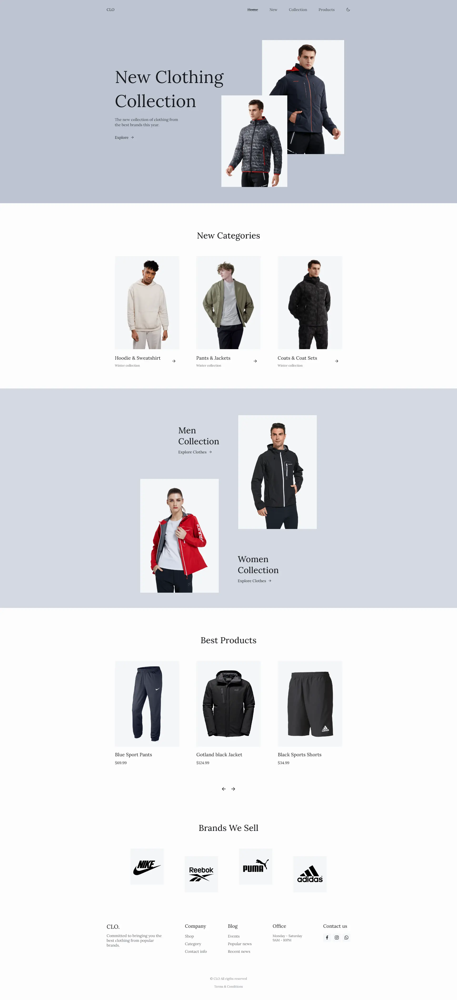

CLO
Project Title:
Font-End Coding/ Website Design
Project Overview:
This personal project is focused on creating a simple e-commerce website that showcases modern design elements and a sleek look. The goal is to create an intuitive shopping experience that is easy to navigate for customers. The website will feature a minimalist design focusing on high-quality product photography and a clean layout. The colour scheme will be simple, with a white background and bold accents in black and a single accent colour. The website will be fully responsive, ensuring that it looks great on all devices.The project will prioritize usability and accessibility, creating a seamless user experience.
Project Type:
Personal
Team Members:
Solo
Project Duration:
1.5 Weeks
Role:
I designed and coded the website
Project Objective / Goals
The goal is to practice and improve my HTML, CSS, and JavaScript skills. By working on various projects and exercises, I aim to enhance my understanding of these languages and gain practical experience building responsive and dynamic web pages. The more I practice, the more confident I become in writing clean, efficient, and effective code, essential for developing modern and user-friendly websites. Ultimately, my goal is to become a proficient and well-rounded web developer who can contribute to creating innovative and engaging online experiences.
Research:
This project demonstrates my coding skills, and the focus was on creating a functional e-commerce website with all the necessary elements. There were no design iterations, and the website follows a standard format that users would expect to see in an e-commerce platform. By prioritizing the technical aspects of web development, this project showcases my proficiency in coding and my ability to create a website that is both user-friendly and fully functional. Thus, there are only a small amount of design customs are taken from Mr Simples website seen in figure 1.
Progress:
This project demonstrates my coding skills, and the focus was on creating a functional e-commerce landing page website with all the necessary elements. There were no design iterations, and the website follows a standard format that users would expect to see in an e-commerce platform. By prioritizing the technical aspects of web development, this project showcases my proficiency in coding and my ability to create a website that is both user-friendly and fully functional.
Challenges:
While designing and coding the website, I encountered various coding-related issues, mainly due to my abilities needing to match my designs, making it more challenging to work on.
Solutions
The solution was to look up parts of CSS effects I had trouble with and look online for help. Like most coding projects looking online is the best way to learn and overcome any coding-related issues or complications. Furthermore, using the built-in vs code terminal in conjunction with HTML/CSS validator help to further find bugs within the code.
My Takeaways:
Learning the way to google and ask certain questions is helpful in actually finding related resources this project as this was before the era of chatGPT. Also, not giving up and work through the problems is the only way to get good at programming.
Conclusion / Result
Overall this project was a success. I learned a lot of HTML, CSS, JavaScript and hover effects; it helped me understand my skill level and allowed me to focus on the things I still need to work on.